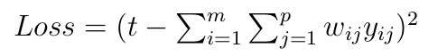

Models¶
The models below are available in ANTk. If the model takes a config file then a sample config is provided.
Skipgram¶
-
class
skipgram.SkipGramVecs(textfile, vocabulary_size=12735, batch_size=128, embedding_size=128, skip_window=1, num_skips=2, valid_size=16, valid_window=100, num_sampled=64, num_steps=100000, verbose=False)[source]¶ Trains a skip gram model from Distributed Representations of Words and Phrases and their Compositionality
Parameters: - textfile – Plain text file or zip file with plain text files.
- vocabulary_size – How many words to use from text
- batch_size – mini-batch size
- embedding_size – Dimension of the embedding vector.
- skip_window – How many words to consider left and right.
- num_skips – How many times to reuse an input to generate a label.
- valid_size – Random set of words to evaluate similarity on.
- valid_window – Only pick dev samples in the head of the distribution.
- num_sampled – Number of negative examples to sample.
- num_steps – How many mini-batch steps to take
- verbose – Whether to calculate and print similarities for a sample of words
-
skipgram.build_dataset(words, vocabulary_size)[source]¶ Parameters: - words – A list of word tokens from a text file
- vocabulary_size – How many word tokens to keep.
Returns: data (text transformed into list of word ids ‘UNK’=0), count (list of pairs (word:word_count) indexed by word id), dictionary (word:id hashmap), reverse_dictionary (id:word hashmap)
-
skipgram.generate_batch(data, batch_size, num_skips, skip_window)[source]¶ Parameters: - data – list of word ids corresponding to text
- batch_size – Size of batch to retrieve
- num_skips – How many times to reuse an input to generate a label.
- skip_window – How many words to consider left and right.
Returns:
Matrix Factorization¶
-
mfmodel.mf(data, configfile, lamb=0.001, kfactors=20, learnrate=0.01, verbose=True, epochs=1000, maxbadcount=20, mb=500, initrange=1, eval_rate=500, random_seed=None, develop=False, train_dev_eval_factor=3)[source]¶
Sample Config¶
dotproduct x_dot_y()
-huser lookup(dataname='user', initrange=0.001, shape=[None, 20])
-hitem lookup(dataname='item', initrange=0.001, shape=[None, 20])
-ibias lookup(dataname='item', initrange=0.001, shape=[None, 1])
-ubias lookup(dataname='user', initrange=0.001, shape=[None, 1])
Low Rank Matrix Factorization is a popular machine learning technique used to produce recommendations given a set of ratings a user has given an item. The known ratings are collected in a user-item utility matrix and the missing entries are predicted by optimizing a low rank factorization of the utility matrix given the known entries. The basic idea behind matrix factorization models is that the information encoded for items in the columns of the utility matrix, and for users in the rows of the utility matrix is not exactly independent. We optimize the objective function \(\sum_{(u,i)} (R_{ui} - P_i^T U_u)^2\) over the observed ratings for user u and item i using gradient descent.

We can express the same optimization in the form of a computational graph that will play nicely with tensorflow:

Here \(xitem_i\), and \(xuser_j\) are some representation of the indices for the user and item vectors in the utility matrix. These could be one hot vectors, which can then be matrix multiplied by the P and U matrices to select the corresponding user and item vectors. In practice it is much faster to let \(xitem_i\), and \(xuser_j\) be vectors of indices which can be used by tensorflow’s gather or embedding_lookup functions to select the corresponding vector from the P and U matrices.
DSSM (Deep Structured Semantic Model) Variant¶
-
dssm_model.dssm(data, configfile, layers=[10, 10, 10], bn=True, keep_prob=0.95, act='tanhlecun', initrange=1, kfactors=10, lamb=0.1, mb=500, learnrate=0.0001, verbose=True, maxbadcount=10, epochs=100, model_name='dssm', random_seed=500, eval_rate=500)[source]¶
Sample Config¶
dotproduct x_dot_y()
-user_vecs ident()
--huser lookup(dataname='user', initrange=$initrange, shape=[None, $kfactors])
--hage dnn([$kfactors,$kfactors,$kfactors],activation='tanh',bn=True,keep_prob=.8)
---agelookup embedding()
----age placeholder(tf.float32)
----user placeholder(tf.int32)
--hsex dnn([$kfactors,$kfactors,$kfactors],activation='tanh',bn=True,keep_prob=None)
---sexlookup embedding()
----sex_weights weights('tnorm', tf.float32, [2, $kfactors])
----sexes embedding()
-----sex placeholder(tf.int32)
-----user placeholder(tf.int32)
--hocc dnn([$kfactors,$kfactors,$kfactors],activation='tanh',bn=True,keep_prob=None)
---occlookup embedding()
----occ_weights weights('tnorm', tf.float32, [21, $kfactors])
----occs embedding()
-----occ placeholder(tf.int32)
-----user placeholder(tf.int32)
--hzip dnn([$kfactors,$kfactors,$kfactors],activation='tanh',bn=True,keep_prob=None)
---ziplookup embedding()
----zip_weights weights('tnorm', tf.float32, [1000, $kfactors])
----zips embedding()
-----zip placeholder(tf.int32)
-----user placeholder(tf.int32)
--husertime dnn([$kfactors,$kfactors,$kfactors],activation='tanh',bn=True,keep_prob=None)
---time placeholder(tf.float32)
-item_vecs ident()
--hitem lookup(dataname='item', initrange=$initrange, shape=[None, $kfactors])
--hgenre dnn([$kfactors,$kfactors,$kfactors],activation='tanh',bn=True,keep_prob=None)
---genrelookup embedding()
----genres placeholder(tf.float32)
----item placeholder(tf.int32)
--hmonth dnn([$kfactors,$kfactors,$kfactors],activation='tanh',bn=True,keep_prob=None)
---monthlookup embedding()
----month_weights weights('tnorm', tf.float32, [12, $kfactors])
----months embedding()
-----month placeholder(tf.int32)
-----item placeholder(tf.int32)
--hyear dnn([$kfactors,$kfactors,$kfactors],activation='tanh',bn=True,keep_prob=None)
---yearlookup embedding()
----year placeholder(tf.float32)
----item placeholder(tf.int32)
--htfidf dnn([$kfactors,$kfactors,$kfactors],activation='tanh',bn=True,keep_prob=None)
---tfidflookup embedding()
----tfidf_doc_term placeholder(tf.float32)
----item placeholder(tf.int32)
--hitemtime dnn([$kfactors,$kfactors,$kfactors],activation='tanh',bn=True,keep_prob=None)
---time placeholder(tf.float32)
-ibias lookup(dataname='item', shape=[None, 1], initrange=$initr
Weighted DSSM variant¶
-
dsaddmodel.dsadd(data, configfile, initrange=0.1, kfactors=20, lamb=0.01, mb=500, learnrate=0.003, verbose=True, maxbadcount=10, epochs=100, model_name='dssm', random_seed=500, eval_rate=500)[source]¶
This model is the same architecture as the variant of DSSM above but with a different loss:
Binary Tree of Deep Neural Networks for Multiple Inputs¶
-
tree_model.tree(data, configfile, lamb=0.001, kfactors=20, learnrate=0.0001, verbose=True, maxbadcount=20, mb=500, initrange=1e-05, epochs=10, random_seed=None, eval_rate=500, keep_prob=0.95, act='tanh')[source]¶

Sample Config¶
dotproduct x_dot_y()
-all_user dnn([$kfactors,$kfactors,$kfactors], activation='tanh',bn=True,keep_prob=None)
--tanh_user tf.nn.tanh()
---merge_user concat($kfactors)
----huser lookup(dataname='user', initrange=$initrange, shape=[None, $kfactors])
----hage dnn([$kfactors,$kfactors,$kfactors],activation='tanh',bn=True,keep_prob=None)
-----agelookup embedding()
------age placeholder(tf.float32)
------user placeholder(tf.int32)
----hsex dnn([$kfactors,$kfactors,$kfactors],activation='tanh',bn=True,keep_prob=None)
-----sexlookup embedding()
------sex_weights weights('tnorm', tf.float32, [2, $kfactors])
------sexes embedding()
-------sex placeholder(tf.int32)
-------user placeholder(tf.int32)
----hocc dnn([$kfactors,$kfactors,$kfactors],activation='tanh',bn=True,keep_prob=None)
-----occlookup embedding()
------occ_weights weights('tnorm', tf.float32, [21, $kfactors])
------occs embedding()
-------occ placeholder(tf.int32)
-------user placeholder(tf.int32)
----hzip dnn([$kfactors,$kfactors,$kfactors],activation='tanh',bn=True,keep_prob=None)
-----ziplookup embedding()
------zip_weights weights('tnorm', tf.float32, [1000, $kfactors])
------zips embedding()
-------zip placeholder(tf.int32)
-------user placeholder(tf.int32)
----husertime dnn([$kfactors,$kfactors,$kfactors],activation='tanh',bn=True,keep_prob=None)
-----time placeholder(tf.float32)
-all_item dnn([$kfactors,$kfactors,$kfactors], activation='tanh',bn=True,keep_prob=None)
--tanh_item tf.nn.tanh()
---merge_item concat($kfactors)
----hitem lookup(dataname='item', initrange=$initrange, shape=[None, $kfactors])
----hgenre dnn([$kfactors,$kfactors,$kfactors],activation='tanh',bn=True,keep_prob=None)
-----genrelookup embedding()
------genres placeholder(tf.float32)
------item placeholder(tf.int32)
----hmonth dnn([$kfactors,$kfactors,$kfactors],activation='tanh',bn=True,keep_prob=None)
-----monthlookup embedding()
------month_weights weights('tnorm', tf.float32, [12, $kfactors])
------months embedding()
-------month placeholder(tf.int32)
-------item placeholder(tf.int32)
----hyear dnn([$kfactors,$kfactors,$kfactors],activation='tanh',bn=True,keep_prob=None)
-----yearlookup embedding()
------year placeholder(tf.float32)
------item placeholder(tf.int32)
----htfidf dnn([$kfactors,$kfactors,$kfactors],activation='tanh',bn=True,keep_prob=None)
-----tfidflookup embedding()
------tfidf_doc_term placeholder(tf.float32)
------item placeholder(tf.int32)
----hitemtime dnn([$kfactors,$kfactors,$kfactors],activation='tanh',bn=True,keep_prob=None)
-----time placeholder(tf.float32)
-ibias lookup(dataname='item', shape=[None, 1], initrange=$initrange)
-ubias lookup(dataname='user', shape=[None, 1], initrange=$initrange)
A Deep Neural Network with Concatenated Input Streams¶
-
dnn_concat_model.dnn_concat(data, configfile, layers=[16, 8, 8], activation='tanhlecun', initrange=0.001, bn=True, keep_prob=0.95, concat_size=24, uembed=32, iembed=32, learnrate=1e-05, verbose=True, epochs=10, maxbadcount=20, mb=2000, eval_rate=500)[source]¶
Sample Config¶
out linear(1, True)
-h1 dnn([16, 8], activation='tanhlecun', bn=True, keep_prob=.95)
--x concat(24)
---huser lookup(dataname='user', initrange=.001, shape=[None, $embed])
---hitem lookup(dataname='item', initrange=.001, shape=[None, $embed])